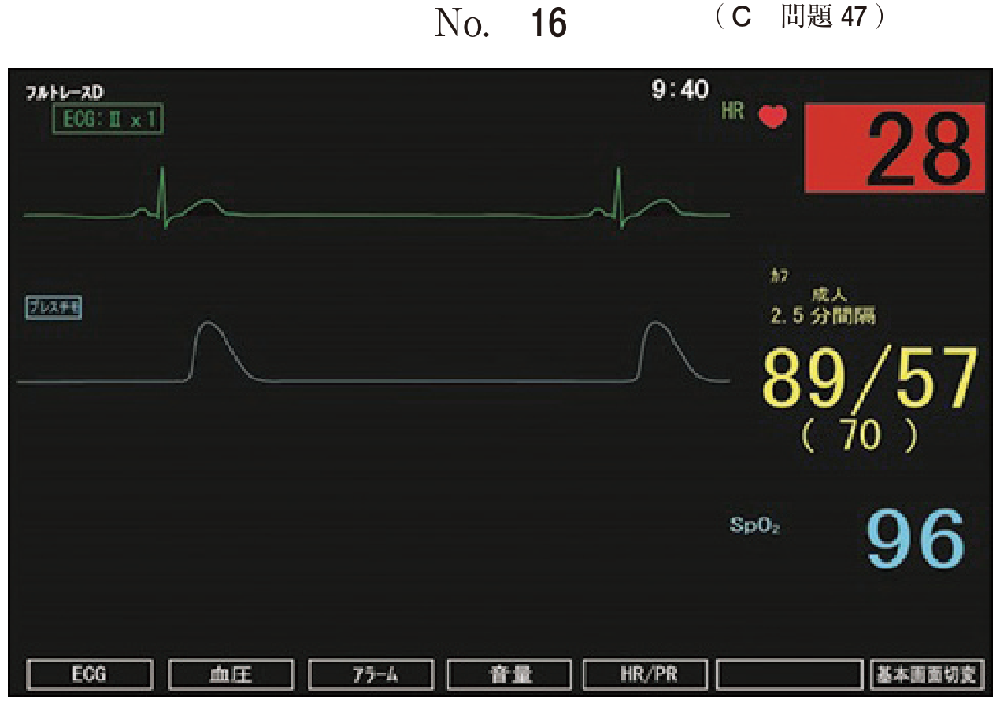

MAC（Minimum Alveolar Concentration）は吸入麻酔薬の強さを比較する指標である。
| 特性 | 内容 |
|---|---|
| 麻酔作用との関係 | MACが小さい → 麻酔作用が強い |
| AD95 | 95%有効濃度 ≒ 1.3MAC |
| 導入の速さ | MACとは無関係（血液/ガス分配係数による） |
吸入麻酔薬の最小肺胞内濃度〈MAC〉で正しいのはどれか。2つ選べ。
【解説】MACはd「麻酔薬投与濃度の指標」であり、e「50%のヒトが皮膚切開に体動を示さない濃度」の定義。aは誤り（導入の速さは血液/ガス分配係数）、bは逆（MACが小さいほど強い）、cは誤り（鎮痛作用の指標ではない）。
全身麻酔導入時に使用する口腔内装置で、喉頭展開時の歯の損傷を防止する。
全身麻酔導入時に使用する装置装着時の口腔内写真（別冊No.22）を別に示す。
この装置の目的はどれか。1つ選べ。

【解説】写真はマウスプロテクター。喉頭鏡で喉頭展開する際にブレードが歯に当たり損傷するのを防ぐ。特に動揺歯がある患者では必須。
患者の意識を保ち、自発呼吸下で挿管操作を行う方法。
| 適応 | 理由 |
|---|---|
| 気道確保困難 | 筋弛緩薬投与後に換気できなくなるリスク |
| フルストマック（胃充満） | 誤嚥リスクが高い（自発呼吸で気道保護） |
全身麻酔の導入に際し、意識下挿管を選択する理由はどれか。2つ選べ。
【解説】意識下挿管の適応は、b気道確保困難（筋弛緩後に換気不能のリスク）とeフルストマック（誤嚥リスクが高い）。自発呼吸を維持したまま挿管することで安全性を確保する。
以下の患者は挿管困難およびマスク換気困難のリスクがある。
18歳の男子。多数歯齲蝕の診断で全身麻酔下による歯科治療が予定された。身長162cm、体重110kg、BMI41.9。軽度の知的障害がある。睡眠時無呼吸症候群を合併しており、夜間は経鼻的持続陽圧呼吸（nCPAP）療法を行っている。
全身麻酔の導入時のリスクはどれか。2つ選べ。
【解説】BMI41.9の高度肥満かつ睡眠時無呼吸症候群は、c挿管困難とeマスク換気困難のリスク因子。肥満では気道周囲の脂肪沈着により気道確保が困難になる。
麻薬性鎮痛薬（フェンタニルなど）は、気管挿管や切開時の交感神経活動亢進を抑制する目的で投与される。
全身麻酔の際に、気管挿管や切開に伴う交感神経活動の亢進を抑制する目的で投与するのはどれか。1つ選べ。
【解説】挿管・切開は侵害刺激となり、交感神経活動が亢進（頻脈・血圧上昇）する。麻薬性鎮痛薬（フェンタニル等）はこれを抑制する。筋弛緩薬は筋弛緩目的、NSAIDsは末梢性の消炎鎮痛。